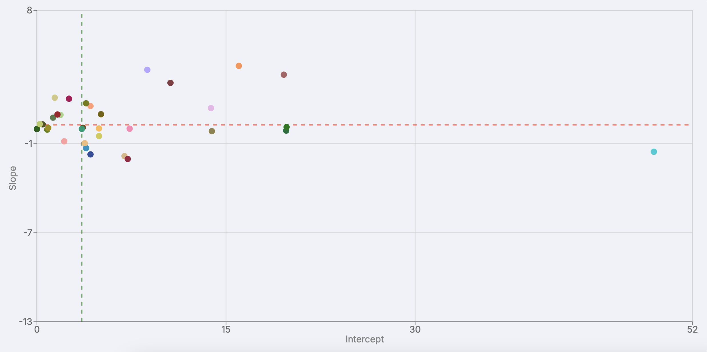

Scorecards
Empowering Decision-Making with Clear Resistance Insights

Dynamic scorecards visualize pathogen resistance trends against antimicrobials. These tools, in the form of videos, depict temporal AMR trends and clustering and provide clear and efficient insights, supporting professional decision-making. By showcasing resistance patterns over time and across different groups, these scorecards enhance understanding and inform effective interventions.